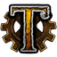
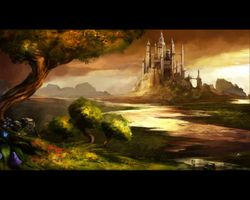
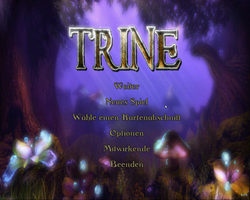
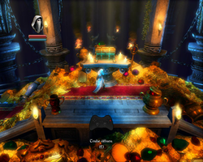
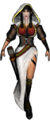
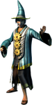
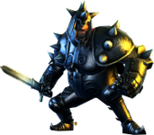
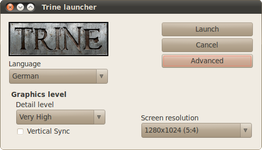
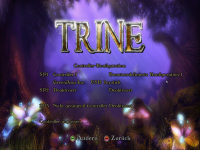
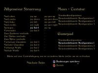

Trine
Dieser Artikel wurde für die folgenden Ubuntu-Versionen getestet:
Ubuntu 14.04 Trusty Tahr
Zum Verständnis dieses Artikels sind folgende Seiten hilfreich:

Trine  ist ein Spiel bei dem es darauf ankommt, die unterschiedlichen Fähigkeiten der drei Helden zu kombinieren. Es müssen Rätsel gelöst, Hindernisse überwunden und die Armee von Skeletten besiegt werden. Im Laufe des Spiels erwerben die Charaktere immer neue Fähigkeiten. Das Spiel setzt auf eine interaktive Physik-Engine und kann von bis zu drei Spielern an einem PC gespielt werden. Neben der Tastatur werden auch Controller unterstützt.
ist ein Spiel bei dem es darauf ankommt, die unterschiedlichen Fähigkeiten der drei Helden zu kombinieren. Es müssen Rätsel gelöst, Hindernisse überwunden und die Armee von Skeletten besiegt werden. Im Laufe des Spiels erwerben die Charaktere immer neue Fähigkeiten. Das Spiel setzt auf eine interaktive Physik-Engine und kann von bis zu drei Spielern an einem PC gespielt werden. Neben der Tastatur werden auch Controller unterstützt.
Der zweite Teil ist ebenfalls unter Linux erschienen.
|  |  |  |
| Intro | Hauptmenü | Tutorial |
Installation¶
Desura¶
Das Spiel kann über die Internetseite oder den Client zur Spieleliste hinzugefügt und gestartet werden [3].
Humble Bundle¶
Den Installer aus der Aktion Humble Frozenbyte Bundle oder vom Humble Store  ausführbar machen [1] und installieren [2]:
ausführbar machen [1] und installieren [2]:
64 Bit¶
./TrineUpdate4.64.run
Während der Installation können Zusatzoptionen gewählt werden, u.a. ob ein Starter im Menü angelegt werden soll. Dieser ist anschließend unter "Anwendungen -> Spiele -> Trine" zu finden.
Bei jedem Spielstart wird der Trine Launcher aufgerufen. Hier können die Startoptionen geändert werden.
Hinweis:
Nach dem ersten Start legt das Spiel im Homeverzeichnis den versteckten Ordner ~/.frozenbyte/trine/ an. In diesem werden unter anderem die Logs, Spielstände und Bildschirmfotos gespeichert.
|  |  |  |
| Zoya | Amadeus | Pontius |
Charaktere¶
Zoya ist eine über 20 Jahre alte Diebin. Sie ist eine außergewöhnliche Bogenschützin, jedoch hat sie ihre Schwächen im Nahkampf. Abgründe überwindet sie mit ihrem Enterhaken.
Amadeus ist ein 35-45 Jahre alter Frauenschwarm und ewiger Student der Astral-Akademie. Sein Studienfach ist die Zauberei. Er in der Lage, Gegenstände mittels seiner Zauberkraft zu bewegen und aus dem Nichts entstehen zu lassen...
Der Ritter Pontius ist ein über 40 Jahre alter Prinzessinnen-Retter, welcher gerne der Armee des Königs beitreten möchte. Mit seinen Nahkampfwaffen bekämpft er seine Gegner.
|  |
| Launcher |
Optionen¶
Trine Launcher¶
Im Trine Launcher kann man bei jedem Spielstart die Sprache, Auflösung und weitere Effekte und Filter ändern die sich hinter der Schaltfläche "Advanced" verbergen.
Spiel¶
Im Hauptmenü kann man unter "Optionen" die Helligkeit, Untertitel, Audio- und Spieleinstellungen vornehmen. Im Unterpunkt "Controller-Konfiguration" können die Einstellungen für den Mehrspieler-Modus vorgenommen und die Belegungen für die Tastatur und Gamepads können hier optimiert werden.
|  |  |
| Controller-Konfiguration | Konfiguration |
Controller-Konfiguration¶
Im oberen Bereich kann man für 3 Spieler festlegen, welches Eingabegerät für das Spiel verwendet wird. Hier neben dem Spieler, z.B. "SP1", auf die Auswahl klicken ("Tastatur + Maus", "Controller 1" ...) und dies festlegen.
Möchte man nicht die Standard-Konfiguration des Controllers / der Tastatur verwenden wählt man "Controller anpassen -> Benutzerdefinierte Konfiguration X" aus und paßt diese Belegung an. Hier einen  Linksklick neben die zu ändernde Aktion ausführen, z.B. auf das "-" neben "Vorherige Waffe", und die entsprechende Taste auf dem Controller oder der Tastatur drücken. Über einen
Linksklick neben die zu ändernde Aktion ausführen, z.B. auf das "-" neben "Vorherige Waffe", und die entsprechende Taste auf dem Controller oder der Tastatur drücken. Über einen  Rechtsklick wird die momentane Belegung entfernt. Ist alles eingerichtet die "Änderungen speichern".
Rechtsklick wird die momentane Belegung entfernt. Ist alles eingerichtet die "Änderungen speichern".
Beim Spieler "SP1" nun "Standard-Konfiguration" anklicken und die neue "Benutzerdefinierte Konfiguration X" auswählen. Über "Ändern" werden die Einstellungen übernommen.
Hinweis:
Bei der Konfiguration die Belegungen auf den Unterseiten, welche unter "Nächste Seite" zu ersehen sind, berücksichtigen.
Deinstallation¶
Problemlösungen¶
kein Sound unter 64 Bit¶
Das Spiel hat keinen Sound und gibt im Terminal gestartet folgende Fehler aus:
ALSA lib conf.c:3314:(snd_config_hooks_call) Cannot open shared library libasound_module_conf_pulse.so ALSA lib pcm.c:2239:(snd_pcm_open_noupdate) Unknown PCM default
In diesem Fall kann es helfen, das Soundmodul per Preload vor Spielstart in den Speicher zu laden:
env LD_PRELOAD=/usr/lib/x86_64-linux-gnu/alsa-lib/libasound_module_conf_pulse.so /PFAD/ZUM/SPIEL/trine-launcher
Tastenkürzel¶
| Tastenkürzel | |
| Taste(n) | Funktion |
| Alt + ⏎ | Vollbid- / Fenstermodus |
| Strg + G | Mauszeiger im Fenstermodus einfangen / freigeben. |
| Alt + F4 | Spiel beenden |
| F11 | Bildschirmfoto erstellen. Diese werden im Homeverzeichnis unter ~/.frozenbyte/trine/screenshots abgelegt. |

Infobox¶
| Trine | |
| Originaltitel: | Trine |
| Genre: | Puzzle |
| Sprache: |    |
| Veröffentlichung: | 2011 |
| Publisher: | Nobilis / Frozenbyte |
| minimale Systemvoraussetzungen: | 2 GHz CPU / 500 MB RAM / Radeon HD 2800 oder GeForce 6800 Grafikkarte (proprietärer Treiber) / 1 GB Festplattenspeicher |
| Medien: | Download |
| Strichcode / EAN / GTIN: | - |
| Läuft mit: | nativ |
- Erstellt mit Inyoka
-
 2004 – 2017 ubuntuusers.de • Einige Rechte vorbehalten
2004 – 2017 ubuntuusers.de • Einige Rechte vorbehalten
Lizenz • Kontakt • Datenschutz • Impressum • Serverstatus -
Serverhousing gespendet von